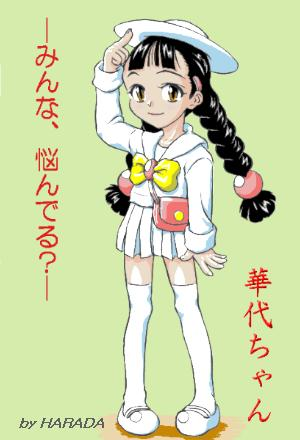

| 華代ちゃん：舞台 | KAZE さん (Homepage) | （イラストなし） | 99/09/10 | 12 KB |
| 【あらすじ】 念願かなってついにバレエの舞台に立てることになった美保。しかし、必ず観に行くと約束していた敏夫は…ＫＡＺＥがお送りする華代ちゃんシリーズ第４弾です。 【コメント】 １作目で制作を表明して書き始めたモノの、なかなか筆（？）が進みませんでしたがようやく出来上がりました。 | ||||
| 【推薦文】 今回は罪のないカップルが、華代ちゃんのサービス精神の犠牲に（笑）。 | ||||
| 【ジャンル】 不条理 【種別】 変身 【属性】 バレリーナ 【キーワード】 「華代ちゃん」 | ||||
| 華代ちゃん：ハムナムラージュへようこそ♪ | Tarota さん | （イラストなし） | 99/09/15 | 10 KB | 感想 |
| 【あらすじ】 ファミレスが舞台です。 【コメント】 あらすじの一言で想像がつく通りのお話しです^^; | |||||
| 【推薦文】 初お目見え、Tarota さんです。正統派の華代ちゃん話なんですね。テンポの良い文章でスイスイ読めます。お話の舞台は……某アンミラとPiaキャロットを足して２で割ったようなお店でしょうか。 | |||||
| 【ジャンル】 不条理 【種別】 変身 【属性】 ウェイトレス 【キーワード】 「華代ちゃん」 | |||||
| 華代ちゃん：リンカーンは大統領！林間は学校 | Tarota さん | （イラストなし） | 99/09/24 | 15 KB | 感想 |
| 【あらすじ】 楽しい林間学校に忍び寄る黒い影。キャンプ場は一転してパニックの場に変わる!! 【コメント】 ↑３流ホラーみたいですねぇ^^;; | |||||
| 【推薦文】 過去の華代ちゃんシリーズ中で最も変身シーンの多い作品です！ もう、次から次へとあられもないことに。（笑） 男女比の片寄った学校は華代ちゃんの餌食になりやすいようなので、注意しましょう。 | |||||
| 【ジャンル】 コメディ 【種別】 変身 【属性】 【キーワード】 「華代ちゃん」 | |||||